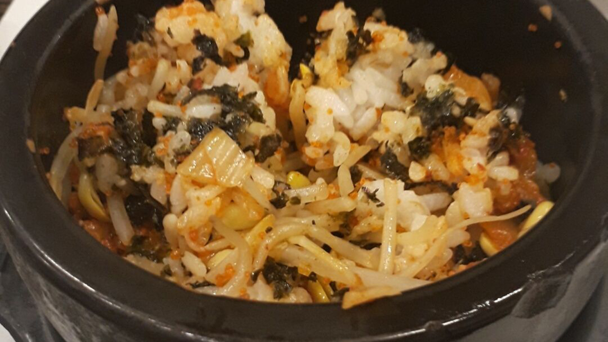
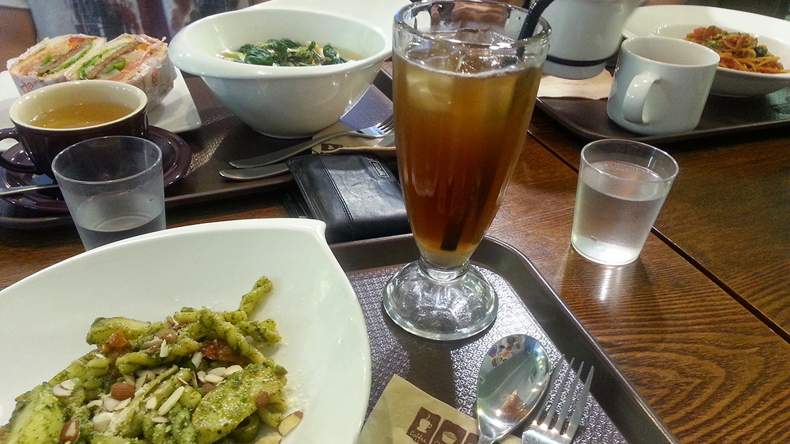
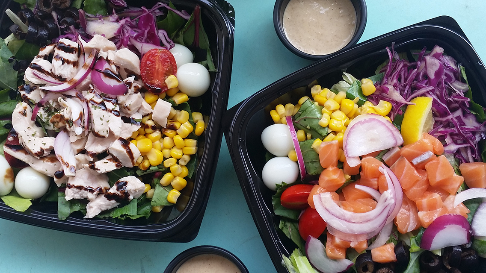
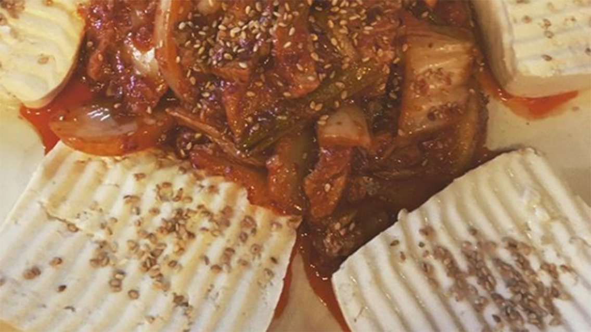

Mixed rice (비빔밥) at Kimbap Nara (김밥나라)
서울시 서초구 방배동 2525 번지
2525 Bangbae-dong, Seocho-gu, Seoul, South Korea

Photo Attribution: received permission to use photos from original photographer Kaitlin Beranek | Cropped and resized from original
Pesto Pasta (페스토 파스타) at Huggers (허거스)
서울 특별시 용산구 한남동 686-22 한국
686-22 Hannam-dong, Yongsan-gu, Seoul, South Korea

Photo Attribution: photo taken by me, Jeongmin Ham | Cropped and resized from original
Salad (샐러드) at Saladay
서울특별시 성북구 안암동5가 15-25
15-25, Anam-dong, Seongbuk-gu, Seoul, South Korea

Photo Attribution: received permission to use photos from original photographer Amy Fu | Cropped and resized from original
Tofu Kimchi (호박 두부김치) at Hobak (호박)
서울시 은평구 갈현동 453-25
453-25 Galhyeon-dong, Eunpyeong-gu, Seoul, South Korea

Photo Attribution: received permission to use photos from original photographer @erist on
Instagram | Cropped and resized from original